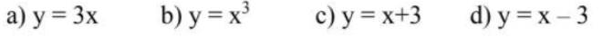
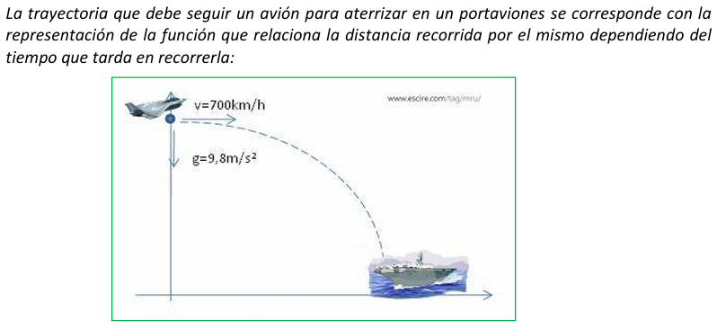
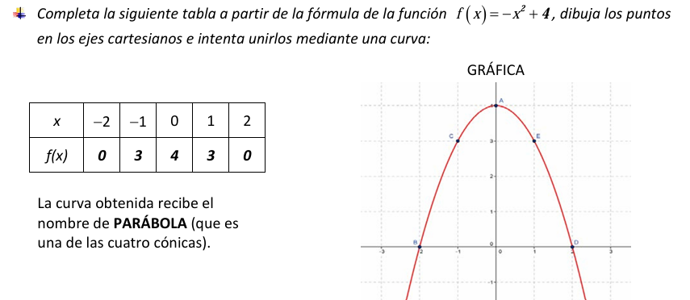

Conceptos básicos
1. Definición de Función: Una función es una relación entre dos magnitudes que cumpla la condición de que a cada valor de una de ellas (llamada variable independiente) le corresponda un único valor de la otra (llamada variable dependiente).

2. Formas de expresar una función:
Una función se puede expresar de diferentes formas:
- Con un enunciado: Consiste en expresar con palabras la relación que existe entre las dos magnitudes. Ejemplo: "A cada número real le hacemos corresponder su cuadrado".
- A través de una tabla de valores: Consiste en representar mediante una tabla las dos magnitudes. En dicha tabla aparecerán varios valores de la variable independiente y los correspondientes de la dependient
- A partir de una fórmula: Consiste en expresar mediante una fórmula la relación existente entre ambas magnitudes o variables. Ejemplos:

- A partir de una gráfica: Consiste en representar en un par de ejes de coordenadas la relación existente entre las dos variables o magnitudes. La variable independiente la representaremos en el eje de abcisas u horizontal y la dependiente en el eje de ordenadas o vertical.
Ejemplo:

3. Paso de unas formas a otras de una función:
Ejemplo: Si nos dan una fórmula, podemos construir su tabla de valores asociada y representar en un par de ejes de coordenadas los puntos que nos proporciona la tabla.
:
